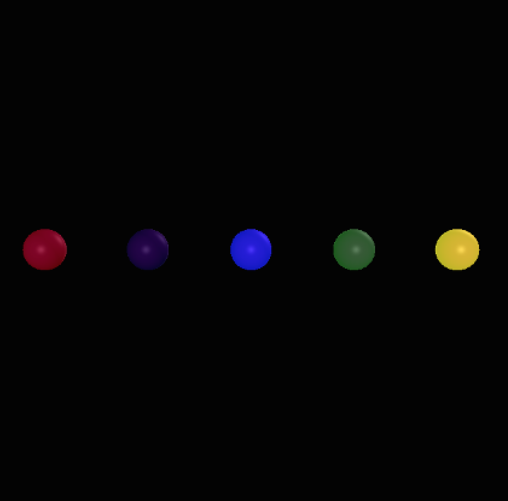
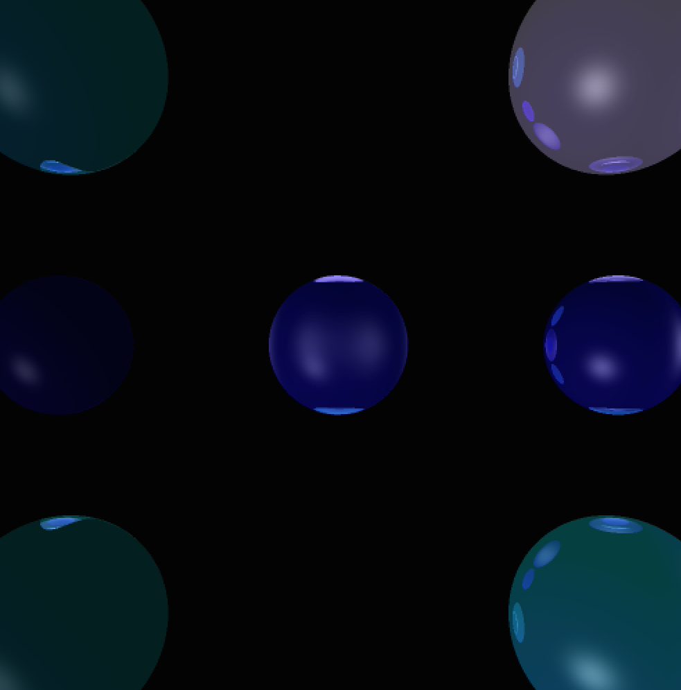

Ray Tracer Example Images
Shannon Axelrod
John Russell
Basic Requirments - NOTE: I have listed some of the commands needed to recreate each picture but when running our code they were stored in files
The First Hurdle- Creating the Red Sphere, We call this "OMMYGODITSWORKING"

size 1000 1000
sphere 0 0 -5 2 1 0 0
point 0 0 200 .6 .6 .6
The classic red sphere, rendered with one point light and only an ambient color of Red.
Time: about 5 seconds
Next was adding lighting and shading. This one is "Longing for the days of Project 1"
size 640 640
sphere 0 0 -5 2 0 0 0
point -200 200 200 .6 .6 .6
diffuse 1 0 1
A shaded blue sphere similar to what we did in Project 1. One point light, one directional light, diffuse and specular componenets.
Time: about 10 seconds
Now it was time to get some multiple spheres and colors going.

#green sphere 0 -1 -5 .2 .1 .5 .1
#purple sphere 0 1 -5 .2 0 0 .2
#blue sphere 0 0 -5 .2 0 0 1
#red sphere 0 2 -5 .2 .5 0 0
#yellow sphere 0 -2 -5 .2 1 1 0
directional 0 0 5 .6 .6 .6
point -200 -200 -200 .6 .6 .6
point -20 -20 -300 .6 .6 .6
diffuse 1 0 1
specular 1 1 1
shininess 16
A few shaded spheres in different colors. Point and directional light, specular and diffuse terms added.
Time: about 30 seconds
Next was getting some triangles. Title: "Minimalism with polygons" and "Tiles and Errors, a pun"
First: size 640 640
vertex 20 20 -100
vertex -20 -20 -100
vertex -20 20 -100
tri 0 1 2 0 .4 .4
vertex 20 20 -200
vertex -20 -60 -100
vertex -20 20 -100
tri 0 1 2 .4 0 0
specular 1 1 1
shininess 16
Two different sized triangles with seperate colors and specular shading.
Time: about 20 seconds
Second: size 640 640
point 0 0 200 .6 .6 .6
point 0 0 -200 .6 .6 .6
vertex 20 20 -100
vertex -20 -20 -100
vertex -20 20 -100
tri 0 1 2 1 0 0
vertex 20 20 -100
vertex -20 -20 -100
vertex 20 -20 -100
tri 3 4 5 0 0 1
vertex 60 -20 -100
vertex 20 -20 -100
vertex 20 20 -100
tri 6 7 8 1 1 0
vertex 60 20 -100
vertex 20 20 -100
vertex 60 -20 -100
tri 9 10 11 0 1 0
vertex -20 -20 -100
vertex -60 -20 -100
vertex -20 20 -100
tri 12 13 14 1 0 1
vertex -20 20 -100
vertex -60 20 -100
vertex -60 -20 -100
tri 15 16 17 0 1 1
Shaded triangles in different colors. Specular and point lights on.
Time: about 30 seconds
Then came Transformations. TITLE: "Circle and Elipse"
size 1000 1000
sphere -.25 1 -4 .5 .1 0 .1
sphere .1 -1.1 -4 .3 0 .1 0
directional -200 200 -100 .5 .5 .6
diffuse 1 1 0
specular .1 .1 .1
shininess 16
One has been transoformed about the Y axis, and the other has not
Time: about 30 seconds
Now for some Shadowing. Title: "Shady Ladies"


size 640 640
sphere 0 -2 -5 .5 0 .4 .4
sphere 0 2 -5 .5 0 .4 .4
point 0 -200 -5 .6 .6 .6
specular 1 1 1
shininess 16
A prime example of shadowing. The two spheres are the same colors but one is clearly being shadowed by the other from the Point light located on the same z axis as the spheres. Specular light is also on.
Time: about 30 seconds
The other two we had saved as images but not their input files. Still wanted to put them up though!
The final step was Recursive Reflections. TITLE: "The Recursive Rainbow"
size 1000 1000
sphere 0 -1.2 -5 .75 1 0 0
sphere 0 1.2 -5 .75 0 0 1
sphere -1.2 0 -5 .75 1 1 0
sphere 1.2 0 -5 .75 0 1 0
point 0 0 200 .6 .6 .6
kr .5
specular 1 1 1
shininess 16
The first reflective image. Rendered with a max depth of 5 and a point light centered directly towards the origin the four spheres are clearly reflecting each other. Specular componenet also on for all spheres.
Time: about 1 minute
Now putting it all together.

Upper Right: size 1000 1000
sphere -.69 .75 -3.9 .21
sphere .15 .70 -3.8 .4
sphere 0 -.75 -4 .75
directional -20 20 -10 .6 .6 .6
point 200 200 -75 .6 .6 .6
diffuse 1 0 0
ambient 0 .1 .15
specular .1 .6 .1
shininess 14
"3WarpedShadowballs"
uses blue ambient light
all balls have been scaled by two in the Y axis
two of the balls are shadowing the third
there is one directional light and one point light
there is no reflection
Time: about 30 seconds
Upper Left: size 1000 1000
sphere -2 2 -5 .75 0 1 1
sphere 2 2 -5 .75 1 1 0
sphere 2 -2 -5 .75 1 1 1
sphere -2 -2 -5 .75 .5 1 0
sphere 0 -2 -5 .75 1 0 0
sphere 0 2 -5 .75 1 0 1
point 0 0 200 .6 .6 .6
point 0 0 -200 .6 .6 .6
kr .5
vertex 20 20 -100
vertex -20 -20 -100
vertex -20 20 -100
tri 0 1 2 1 0 0
vertex 20 20 -100
vertex -20 -20 -100
vertex 20 -20 -100
tri 3 4 5 0 0 1
vertex 60 -20 -100
vertex 20 -20 -100
vertex 20 20 -100
tri 6 7 8 1 1 0
vertex 60 20 -100
vertex 20 20 -100
vertex 60 -20 -100
tri 9 10 11 0 1 0
vertex -20 -20 -100
vertex -60 -20 -100
vertex -20 20 -100
tri 12 13 14 1 0 1
vertex -20 20 -100
vertex -60 20 -100
vertex -60 -20 -100
tri 15 16 17 0 1 1
My favorite image. 6 spheres and 6 triangles. Reflecting off each other in beautiful harmony. One point light used, a max recursive depth of 5 and specular terms on for all objects.
Time: about 2 minutes
Lower Left: size 1000 1000
sphere 0 -1.2 -5 .75 1 0 0
sphere 0 1.2 -5 .75 0 1 0
sphere -1.6 0 -5 .75 0 0 1
sphere 1.6 0 -5 1 0 0 0
directional 0 0 1 .6 .6 .6
point -50 -50 200 .6 .6 .6
point 50 50 200 .6 .6 .6
kr .5
specular .6 .6 .6
shininess 16
"ReflectionTest"
There are four balls in this image, though though the bottom one is eliptical and black
This image demonstrates reflection
This image is 1000 by 100 pixels
Time: about 45 seconds
Lower Right: size 1000 1000
sphere 0 -2 -5 .5 0 0 .4
sphere 0 2 -5 .5 0 0 .4
sphere 0 0 -5 .5 0 0 .4
sphere -2 2 -5 .75 0 .5 .5
sphere 2 2 -5 .75 0 .5 .5
sphere 2 -2 -5 .75 0 .5 .5
sphere -2 -2 -5 .75 .5 .5 .5
directional 200 200 200 .6 .6 .6
point 0 -200 -5 .6 .6 .6
kr .5
diffuse .1 0 .4
specular 1 1 1
shininess 16
Our final image, it has it all shading reflection shadows. The four corner spheres are the same color and the three center spheres are also the same but becasue of the shadows and reflections they appear much different. On point light directed towards the origin and on coming from the right side of the image. Each spere also has a specular term. Max recursive depth was 5.